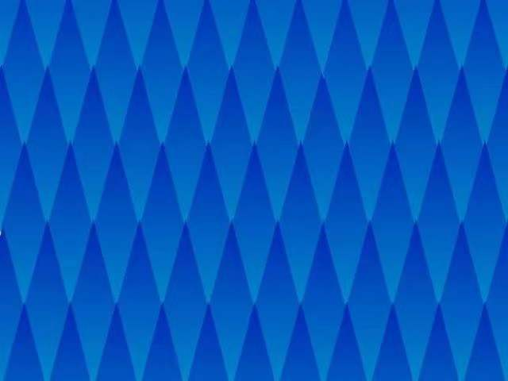

Cornsweet illusion
Go back
The gradient color of each diamond is the same, but they seem to get darker and darker (from top to bottom). Using the Conway illusion, light edges appear brighter and dark edges appear darker, the opposite of the usual contrast effect.
